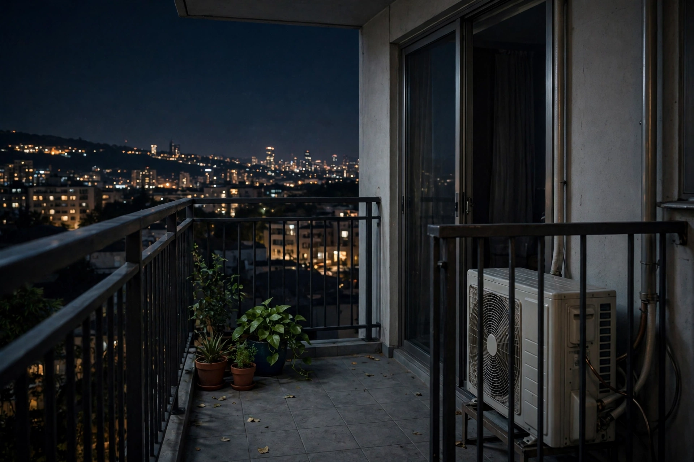

この記事の要点
- 洗濯機や掃除機の音が、隣や下の階に聞こえていないか気になることはありませんか？
- 洗濯機や掃除機の音は、運転音そのものと、床に伝わる振動の、両方で伝わる場合があります。
- まず、時間帯の工夫です。
⏱ 急いでいる人へ ― 今夜やること3つ
📖 目次
💡 まず知っておきたいこと：家電の音は、振動と、運転音の両方です
洗濯機や掃除機の音は、運転音そのものと、床に伝わる振動の、両方で伝わる場合があります。洗濯機の脱水時の振動や、掃除機のモーター音は、壁や床を通って、隣の部屋に聞こえる場合があります。音を小さくするには、運転音そのものを小さくすることと、振動の伝わりを減らすことの、両方から考えるのが筋道です。
🔊 家電ごとの音の出方と響き方
家電の音は、「空気を伝わる運転音」と「床や壁を伝わる振動」の組み合わせです。どちらが中心かは家電ごとに違います。
| 家電 | 音の出方 | 響き方の特徴 |
|---|---|---|
| 洗濯機 | 脱水時の振動と、モーターの運転音 | 振動が床を伝わり、下の階で低く響く場合があります。洗濯物が偏ると、振動が大きくなりやすい傾向があります |
| 掃除機 | モーター音・排気音など、空気を伝わる音が中心 | 音量が大きめで、壁越しにも聞こえやすい部類です。ヘッドが床や家具に当たる音も重なります |
| 食洗機 | 給排水の音と、ポンプの運転音 | 一回の運転が長く、周りが静かな夜間ほど目立ちやすくなります |
| 衣類乾燥機 | ドラムの回転音と振動 | 洗濯機と似て振動が伝わりやすく、運転時間も長めです |
| エアコンの室外機 | コンプレッサーとファンの低い音 | ベランダや外壁に接していると、振動が建物を伝わる場合があります。低い音は届きやすい傾向があります |
| 冷蔵庫 | コンプレッサーの低い運転音 | 止められない家電のため、壁から少し離すなど置き場所の工夫が中心です |
「音が大きい家電」と「振動で響く家電」では工夫の方向が違うため、まずタイプを知ることが入口です。
💡 時間帯の工夫
まず、時間帯の工夫です。夜遅くや早朝の、洗濯機や掃除機の使用は、避けるのが無難です。昼間の時間帯に、まとめて使う、という方法は、周りの人への配慮になります。建物によっては、管理規約で、使用時間帯が決められている場合があります。規約を確認してみてください。
なお、「何時までなら使ってよい」という一律の線引きはありません。目安とされる時間帯はあっても、建物の構造や、周りの世帯の生活リズムによって、同じ音でも受け取られ方は変わります。一般に夜間や早朝は周囲の音が少なくなるため、昼間なら気にならない音でも目立ちやすくなります。まずは管理規約を確認し、住まいの状況に合わせて考えるのが現実的です。
⏰ タイマーと使い方の具体策
家電の多くには、運転を始める・終える時刻をずらすタイマー機能があります。「使うのをやめる」のではなく、「時間をずらす」ための工夫です。
- 洗濯機 ― 予約タイマーで、脱水が終わる時刻が昼間や自分の起きている時間帯になるよう合わせる方法があります。脱水だけでもずらすと、印象が変わる場合があります
- 食洗機 ― 夕食後の分を夜遅くに回すのではなく、タイマーで開始をずらし、遅い時間帯を避ける使い方もあります
- ロボット掃除機 ― スケジュール機能で昼間に運転させる方法があります。ただし、家具に当たる音などもあるため、時間帯への配慮は手動の掃除機と同じです
- 分けて使う ― 洗濯と乾燥を続けて夜に回さず、乾燥は翌朝に分けるだけでも、音の続く時間は短くなります
設定方法は機種ごとに違うため、取扱説明書を確認してください。いずれも「これで大丈夫」という保証ではなく、配慮を積み重ねる工夫の一つです。
💡 振動と、使い方の工夫
洗濯機の下に、防振マットを敷くことで、振動の伝わりを減らす助けになる場合があります。洗濯機が水平に置かれていないと、振動が大きくなりやすい傾向があります。掃除機は、床の材質に合った設定で使う、家具にぶつけないようにする、といった工夫も、音を小さくする方法です。食洗機や、乾燥機など、ほかの家電についても、運転音が気になる時間帯は、避けるのが無難です。
参考：商品の例（広告）
このページの内容に合う商品の例です。購入する場合は、商品ページの仕様や価格をご確認ください。
洗濯機用防振ゴム「ニューしずか」TW-660（東京防音）を楽天市場で見る（広告）
価格：1,000円（4個入り、2026年10月30日確認時点の表示価格。価格や在庫は変わる場合があります。）
ほかの生活音について
ドアの開け閉めや、引き戸の音、トイレの水を流す音、シャワーの音なども、生活音として伝わる場合があります。ドアは、ゆっくり閉めるだけでも、音が変わります。夜は、シャワーやトイレの使用時間帯も、気にかけてみてください。どれも、音を完全になくすものではありませんが、大きな音を、小さな音に変えることは、できます。
🌙 生活時間がずれる世帯への配慮
夜勤や交代勤務などで昼に寝て夜に活動する世帯では、「静かにしたい時間」と「普通に生活する時間」が、周りの世帯と逆転します。昼間の家電の音で目が覚める悩みもあれば、夜にしか洗濯できない自分の音が心配なこともあります。
どちらの立場でも考え方は同じです。音を出す側は、ずらせる家電から時間帯を工夫する。音が気になる側は、耳栓やマスキング音といった「聞く側の工夫」も組み合わせる。そして可能なら、「夜勤で昼に寝ています」と一言伝えておくだけで、お互いの受け止め方が変わることがあります。生活リズムの違いは、どちらが悪いという話ではありません。
💬 苦情が来た・言いたいときの入口
家電の音で苦情が来てしまったときは、まず「いつ、どの家電の音か」を確認することから始めてください。心当たりとは違う家電が原因だった、ということもあります。日時や内容を記録しておくと、見直しや話し合いに役立ちます（騒音の記録シート）。対応の進め方は苦情が来たときの対応にまとめています。
逆に、周りの家電の音を言いたいときも、感情的になっているその場で伝えるより、落ち着いたタイミングで、時間帯と音の種類を具体的に伝えるほうが伝わりやすい傾向があります。進め方に迷ったら対処のフローチャートも参考になります。管理会社など第三者を通す選択肢もあります。
❓ よくある質問
- Q. 洗濯機や掃除機は、何時までなら使っていいのですか？
- A. 一律に決まった時刻はありません。管理規約で決められている場合はそれが基準になりますし、規約がない場合も、建物の構造や周りの生活リズムで受け取られ方は変わります。一般に夜間・早朝は音が目立ちやすいため、その時間帯を避けるのが無難とされますが、あくまで目安として考えてください。
- Q. 防振マットを敷けば、洗濯機の振動はなくなりますか？
- A. 振動の伝わりを減らす助けになる場合はありますが、完全になくなるとは限りません。洗濯機が水平に置けていないと振動が大きくなりやすいため、マットの前に水平の確認も大切です。異常に大きな振動や音は故障の可能性もあるため、メーカーへの相談をご検討ください。
- Q. 夜勤で、夜しか洗濯できません
- A. 生活リズム上、避けられない場合もあります。脱水の時間帯を少しでもずらす、防振の工夫をする、可能なら周りの世帯に一言伝えておく、といった積み重ねが現実的です。「夜勤だから仕方ない」「夜は絶対にダメ」のどちらかに決めつけず、規約と周りの状況に合わせて考えてください。
- Q. 家電の音で苦情が来てしまいました
- A. まず落ち着いて、いつ・どの家電の音の話かを確認してください。記録を付け、時間帯や使い方を見直すことが第一歩です。進め方は苦情が来たときの対応のページにまとめています。
⚠️ 注意
このページの内容は、法律の判断ではありません。家電の故障や、異常な振動や音が気になる場合は、メーカーや、専門家への相談をご検討ください。防振マットなどのグッズで、すべての音を消せるわけではありません。